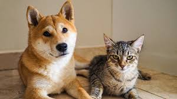
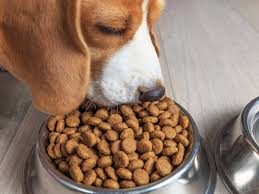
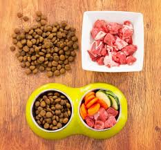
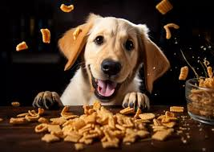

Ultimas noticias
¡Como le cambio la vida a un perro adoptado!
Adoptar un animal no solo cambia la vida del animal, sino también la tuya. Miles de perros, gatos y otros animales esperan encontrar un hogar amoroso. Infórmate sobre el proceso y da el primer paso para ser un héroe para ellos.
Antes De Ser Adoptado

Una Vez Adoptado

Familia Del Animal

¿Que beneficios tenia esta adopción?
- El perro fue feliz.
- Recibio un compañero leal y agradecido.
- La persona que le adopto fue feliz con su nuevo compañero
¡Testimonios de adopción!
- Laura G: "Estaba sola y, gracias a adoptar a Lucas, mi vida cambió por completo. Ahora tengo un amigo fiel que siempre está a mi lado."
- Pedro S: "Cuando adopté a Rocky, no solo le di un hogar, él también llenó mi vida de alegría y risas."
- María P: "Adoptar a Lola fue la mejor decisión que tomé. Ver cómo su vida mejora día a día es algo que no tiene precio."
¡Juguetes que le encantarán a tu perro!
Adoptar un animal no solo cambia la vida del animal, sino también la tuya. Miles de perros, gatos y otros animales esperan encontrar un hogar amoroso. Infórmate sobre el proceso y da el primer paso para ser un héroe para ellos.
¿Porque comprar estos jugetes?
- El perro es feliz.
- No le hace ningun daño.
- Hace ejercicio
- Ahorras dinero, ya que los juguetes o articulos no son 100% bien distribuidos.
¡Testimonios Al Adquirir Juguetes Correctos Para Tu Mascota!
- Carlos M: "¡Antes compraba juguetes que no le duraban ahora estoy comvencido que hice una buena compra!"
- Andrea P: "¡compre otro tipo de juguetes pero como este no habia ninguno, muy buena compra!"
- Ivan S: "¡La compra del mordedor fue lo mejor, ahora mi perro esta muy feliz!"
Anuncios
¡La Adopcion Es Segura!
Si la adopcion es segura y muy eficaz porque estas mejorando la vida a un animal que lo puede estar pasando mal.
Pocos Tramites
Totalmente gratis
Animales De Compañia
¿porque adoptar a un perro? ¿Es seguro?
- Beneficios:
- Te hace compañía, brindándote amor incondicional.
- Te ayuda en los momentos difíciles, mejorando tu bienestar emocional.
- Fomenta un estilo de vida activo al salir a caminar regularmente.
- Ayuda a liberar tensiones y reducir el estrés.
- ¿Es Seguro?:
- Sí, siempre que elijas adoptar de refugios o asociaciones confiables.
- Los perros en adopción suelen pasar revisiones médicas y comportamentales antes de ser entregados.
- Adoptar fomenta la tenencia responsable, promoviendo la educación sobre el cuidado animal.
- Con paciencia y amor, el vínculo que creas con tu perro es seguro y duradero.
¡Testimonios Al Adquirir Juguetes Correctos Para Tu Mascota!
- Marta M: "Es lo mejor que me paso en la vida, adopte a un gatito y ahora no paro de reime con el y no necesite mucho tiempo para adoptalo"
- Lorenzo L: "Adopte a un perrito ya no me siento solo, me alegra que le salvase la vida"
- Antonio D: "Como animal de compañia el mejor del mundo."
¡Accesorios que harán feliz a tu perro!
Adoptar un animal no solo cambia la vida del animal, sino también la tuya. Para asegurar que tu nuevo amigo esté cómodo y seguro, aquí tienes algunos accesorios esenciales que debes considerar.
¿Por qué elegir estos accesorios?
- Garantizan la comodidad y el descanso del perro (cama).
- Facilitan los paseos seguros y agradables (correa ajustable).
- Mantienen la higiene y evitan derrames durante las comidas (cuenco antideslizante).
- Duraderos y adaptables para cualquier tamaño de mascota.
¡Testimonios de familias felices con estos accesorios!
- Laura P: "La cama ortopédica que compré para Toby ha sido una maravilla. Ahora duerme profundamente y con total comodidad."
- Miguel H: "La correa ajustable es muy práctica para nuestros paseos diarios. Nos da seguridad y estilo."
- Ana G: "El cuenco antideslizante es perfecto para Max, ya no vuelca el agua ni la comida."
¡Una alimentación saludable para tu perro!
La alimentación de tu perro es clave para su salud y felicidad. Una dieta equilibrada no solo mejora su energía y vitalidad, sino que también previene problemas de salud a largo plazo. Aprende cómo proporcionarle los mejores alimentos para una vida plena.
Alimentos Naturales
Piensos Balanceados
Snacks Saludables
¿Por qué es importante una buena alimentación?
- Promueve un sistema inmunológico fuerte.
- Contribuye a un pelaje brillante y saludable.
- Mejora la digestión y evita problemas gastrointestinales.
- Ayuda a mantener un peso adecuado y una vida activa.
¡Historias de éxito con una buena alimentación!
- Mariana L: "Desde que cambié a alimentos naturales, Rocky tiene más energía y su pelaje está precioso."
- Pedro R: "El pienso balanceado recomendado por el veterinario ha sido perfecto para la salud de mi perro."
- Sofía G: "A Max le encantan los snacks saludables, y ahora no tengo que preocuparme por darle algo que le haga daño."
Contenido De Mas
Otros consejos para cuidar a tu perro
- Asegúrate de que tu perro tenga un lugar tranquilo para descansar.
- Invierte en una correa que sea cómoda tanto para ti como para tu perro.
- Proporciónale juguetes y accesorios que lo mantengan entretenido y saludable.
- Mantén sus cuencos de agua y comida siempre limpios para garantizar su bienestar.
¡Videos sobre adopción!
Aquí tienes algunos videos inspiradores que te ayudarán a conocer más sobre la adopción de animales: